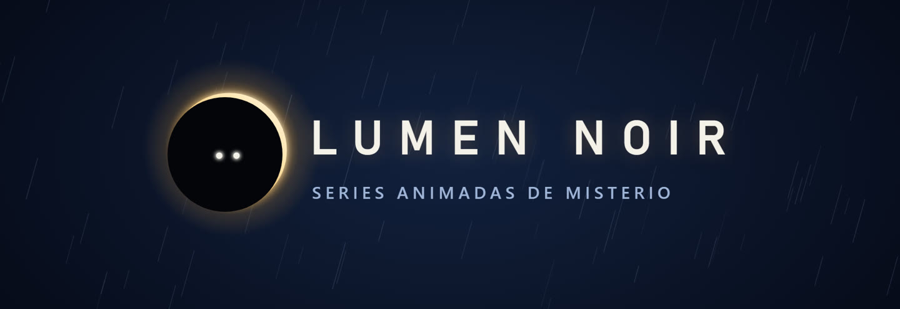

Lumen Noir
Animated mystery series
Lumen Noir tells animated stories in short episodes: mystery and science fiction in a noir silhouette style, with rain, shadows and a single light. Each episode runs about a minute and ends with a question. Now airing: La Señal / The Signal. Every night at 3:17, Elena hears her own voice on the radio, warning her about what's coming. But she's not the only one listening.
Episodes are published to our own channels with Lumen Noir Publisher, a private tool we use to upload each episode to YouTube, TikTok and Instagram. It is not offered to the public. See our Privacy Policy and Terms of Service.
Lumen Noir Publisher uses YouTube API Services to upload our episodes to our own YouTube channel. By using it you agree to the YouTube Terms of Service; Google handles data according to the Google Privacy Policy.